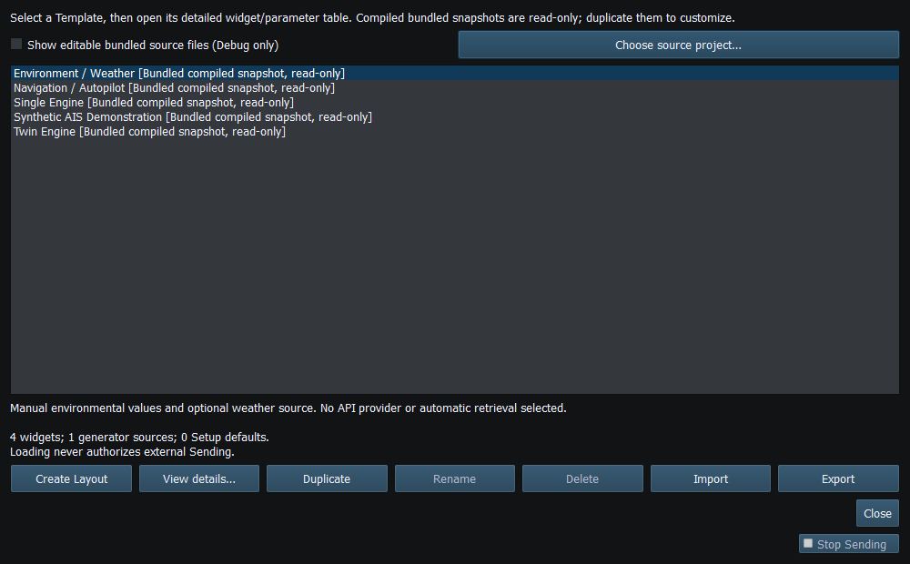
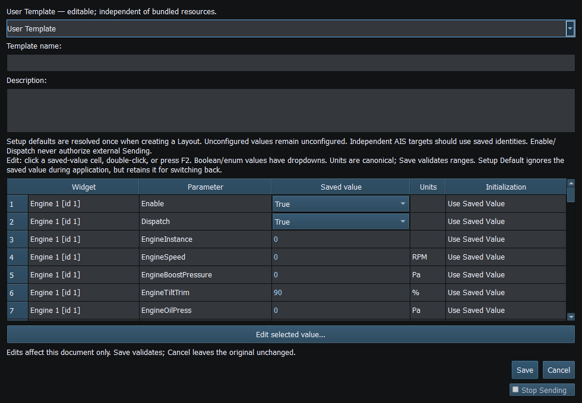

Templates are reusable workspace recipes. Use one when you want the same instrument arrangement with deliberately chosen initialization policies; use a Layout for a particular saved working snapshot.
| Policy | Meaning when applied |
|---|---|
| Use Saved Value | Initialize this field from the Template's canonical value |
| Setup Default | Resolve a supported field from current Setup; the saved value is retained for switching policy back |
Not every field has a Setup mapping. Fixed Use Saved Value rows are intentional. Canonical units and validation apply in the table; changing the visible unit preference elsewhere is not a license to type Fahrenheit into a Kelvin policy row.
User Templates are editable and can be renamed/deleted using management actions. Compiled bundled Templates are read-only; duplicate one into a User Template for changes. Debug additionally exposes Bundled Template source authoring with a selected source project. That edits source JSON/catalog resources, not immutable bytes inside the running executable. Rebuild to incorporate bundled-source changes into later binaries.
Use User Templates for normal editing and storage. Startup Workspace can select one separately from applying it in the current session.
Reading guide: In the detailed editor: destination is at the top; Saved value and Initialization are separate columns; Edit selected value opens the selected supported editor; Save/Cancel finish the document.

Figure 19. The Template manager distinguishes bundled and User entries and provides separate management actions. Click to enlarge.

Figure 20. The detailed Template editor uses canonical values and per-field Saved Value / Setup Default policies. Click to enlarge.
Main Window · Instruments and Generators · Layout Management · Property Editor · Object Tree · Themes and Appearance · Keyboard Shortcuts · Connection Troubleshooting · Enable, Dispatch and Sending · Route Overview · Engineering Units